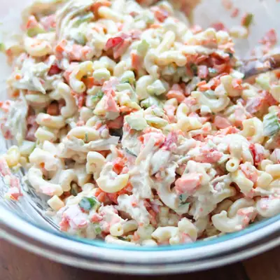

Healthy Chicken Macaroni Salad

Ingredients
- 2 cups cooked elbow macaroni
- 1 1/2 cups cooked chicken, shredded or chopped
- 1/3 cup carrot, finely diced
- 1/3 cup cucumber, finely diced
- 1/3 cup celery, finely diced
- 1/3 cup red bell pepper, finely diced
- 1/3 cup red onion, finely diced
- 1/2 cup Greek yogurt, plain
- 1/3 cup mayo (I use Primal Kitchen Mayo)
- 1 tablespoon dijon mustard
- 1 tablespoon apple cider vinegar or white vinegar
- 1 tablespoon honey
Steps
- Cook the macaroni: Cook the pasta according to the package instructions. Drain and rinse with cold water to cool it down quickly. also adding a teaspoon of olive oil to keep the noodles from sticking together.
- Prepare the dressing: In a bowl, whisk together all the ingredients. Taste and adjust to taste. For example, I like it a bit more vinegary so I add a bit more.
- Add the veggies and chicken: To a large mixing bowl, add the cooked chicken and the vegetables.
- Pour in the dressing. Stir until all the ingredients are well coated with the dressing. Chill and serve: For the best flavor, let the pasta salad chill in the refrigerator for at least 30 minutes before serving. Serve cold.
Recipe by Min Kwon · Kidfriendly Meals, from MJ and Hungryman. Saved here for personal use; the original has the full notes, tips and photos. Open original